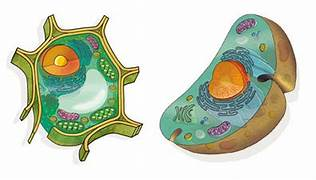

LA CÉLULA

Este blog tiene como finalidad mostrar la célula como la unidad estructural más pequeña ordenada, viviente y funcional de todo ser vivo, reconociendo sus partes y funciones.
El descubrimiento de la célula se considera como el estudio moderno de la vida, dado que permitió comprender la enorme complejidad del cuerpo de los seres vivos y permitió el surgimiento de numerosas ciencias y disciplinas.